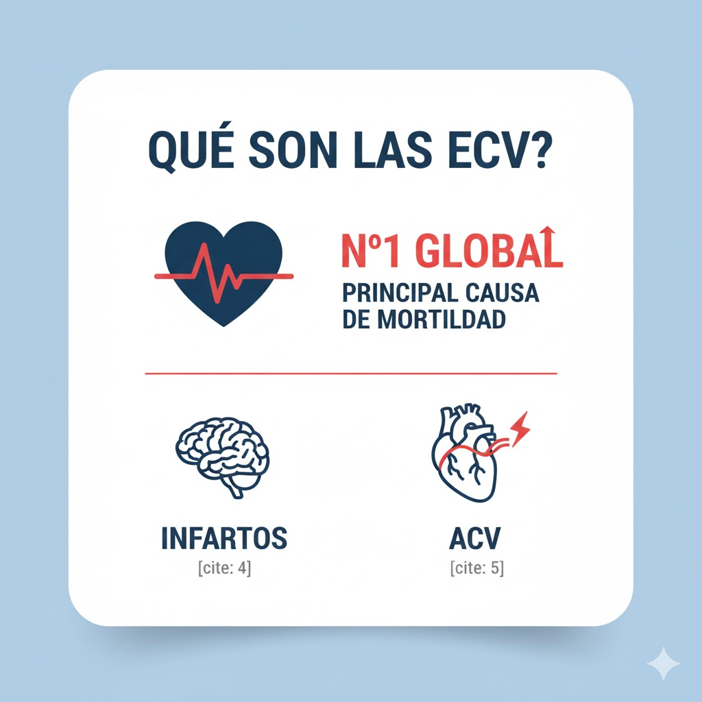
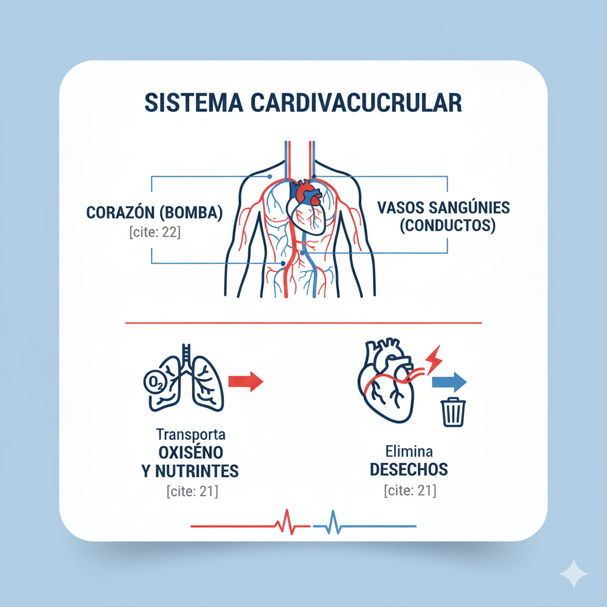
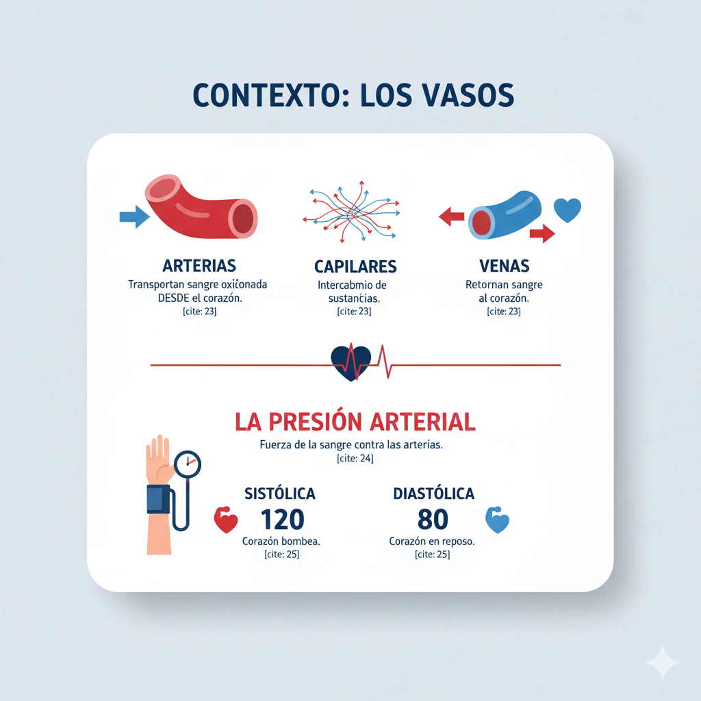
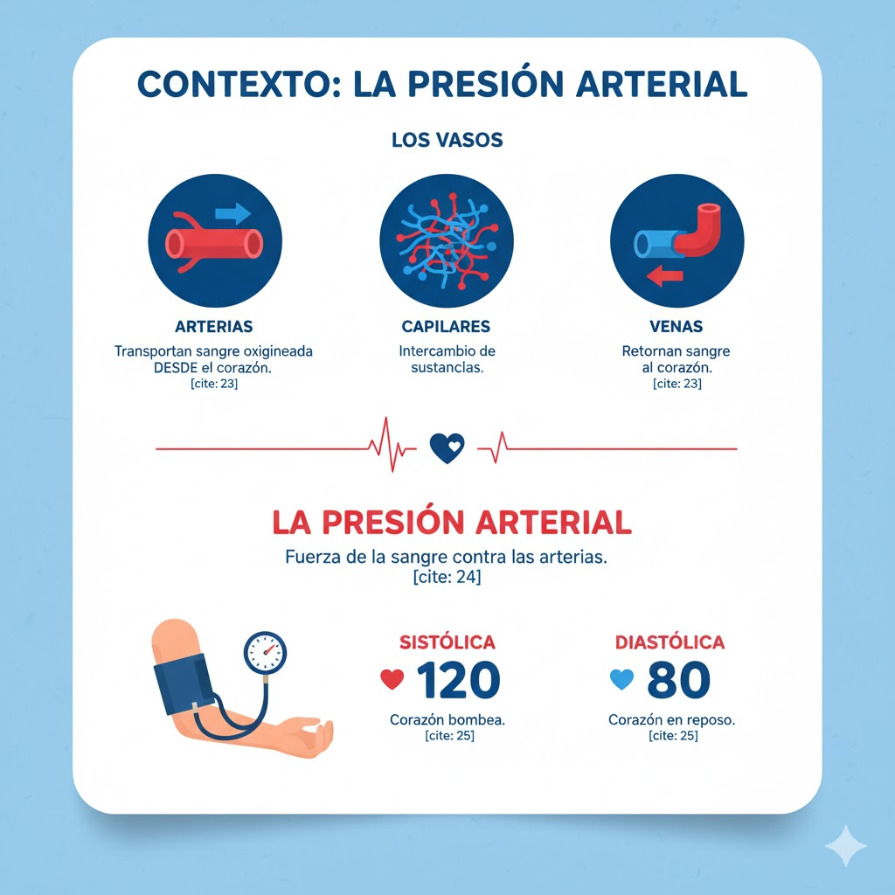
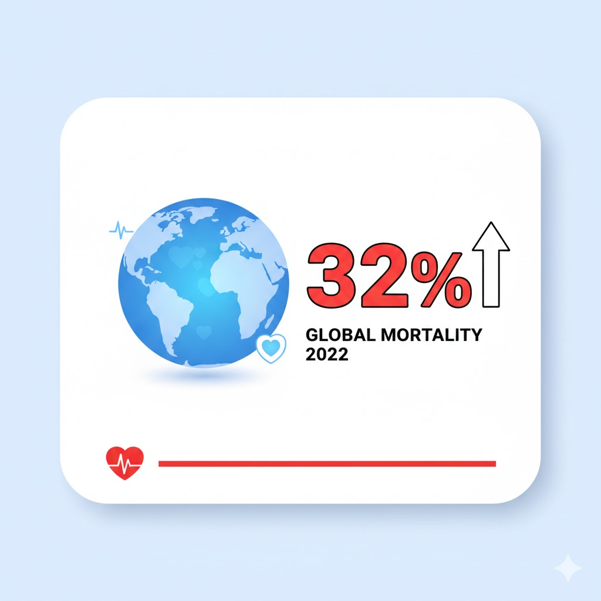
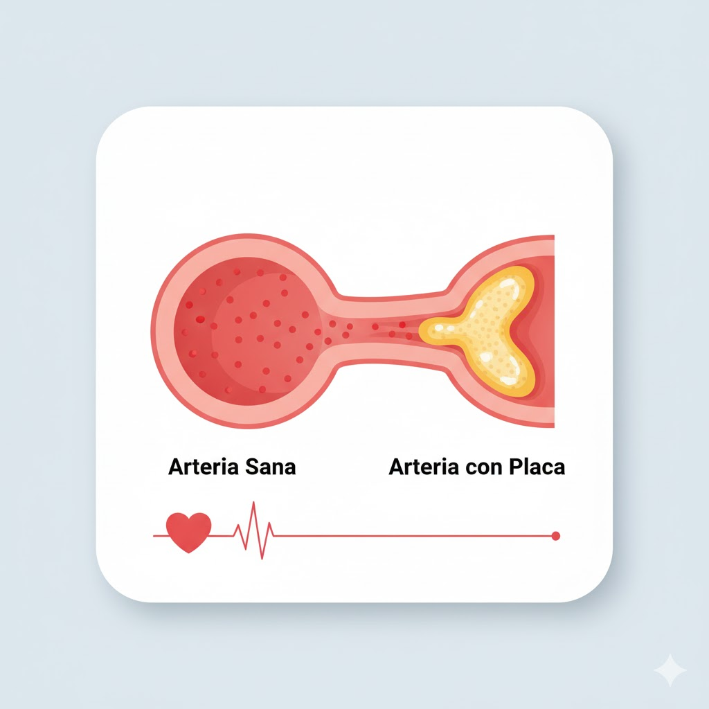
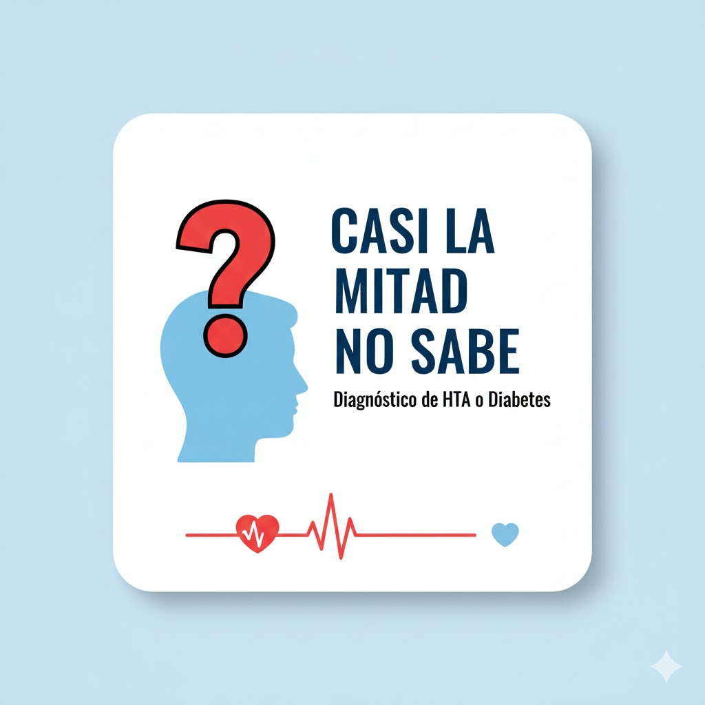
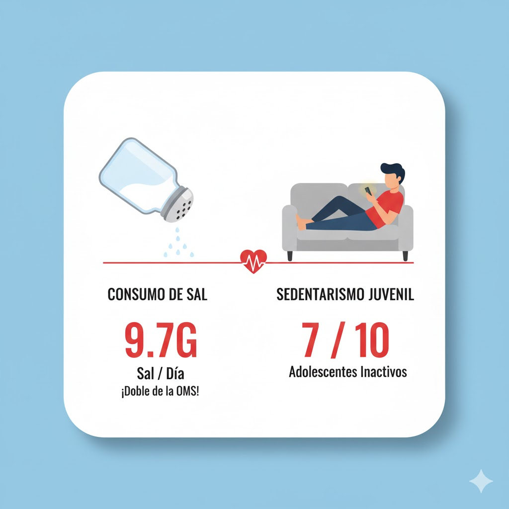
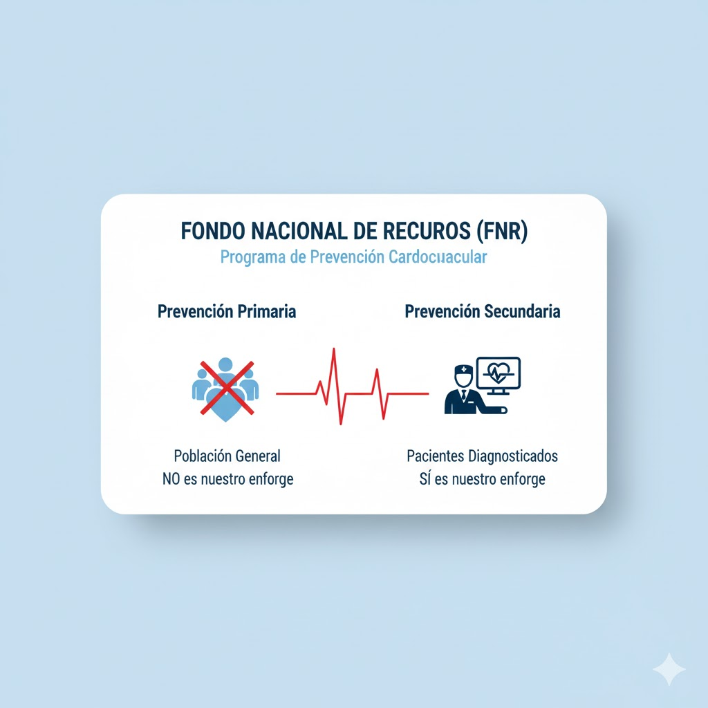

"Enfermedades Cardiovasculares" (ECV) es el término para un grupo de desórdenes que afectan al corazón y a los vasos sanguíneos.
Constituyen la principal causa de mortalidad a nivel global.
Las más comunes son la cardiopatía isquémica (que causa los infartos) y los accidentes cerebrovasculares (ACV).

Contexto: El Sistema Cardiovascular
Es una red compleja responsable de transportar sangre, oxígeno y nutrientes a todo el cuerpo.
Sus componentes principales son:
El corazón, que actúa como una bomba muscular.
Los vasos sanguíneos, que son los conductos.

Contexto: Los Vasos Sanguíneos
Arterias: Transportan la sangre rica en oxígeno DESDE el corazón hacia el resto del cuerpo.
Venas: Retornan la sangre desoxigenada (y desechos) HACIA el corazón.
Capilares: Vasos microscópicos que conectan arterias y venas, permitiendo el intercambio.

Contexto: La Presión Arterial
Es la medida de la fuerza que ejerce la sangre contra las paredes de las arterias.
Se mide con dos valores:
Sistólica: La presión cuando el corazón se contrae y bombea.
Diastólica: La presión cuando el corazón está en reposo entre latidos.

Trivia: ¡Un Vistazo al Corazón de Uruguay!
Presentación de datos clave
¡Hola! A continuación, veremos 5 datos clave sobre la salud cardiovascular.
¡Presten mucha atención! Luego, usaremos esa información para jugar una trivia.
El Problema N°1 en el Mundo
Las enfermedades cardiovasculares (ECV) son la principal causa de mortalidad en todo el planeta.
Se calcula que en 2022, el 32% de todas las muertes registradas en el mundo (casi un tercio) fueron consecuencia de una ECV.

La Culpable Silenciosa
¿Qué es la Aterosclerosis? Es la principal culpable detrás de la mayoría de las ECV.
Es un proceso crónico, progresivo y silencioso que consiste en la acumulación de depósitos de grasa y colesterol (la "placa") en el revestimiento interno de las arterias.

Nuestros Hábitos y Riesgos (1/2)
La "Brecha de Conocimiento":
¡Es alarmante! Casi la mitad de las personas que tienen hipertensión o diabetes... ¡no saben que las padecen! Además, muy pocos de los que sí lo saben logran tenerla bien controlada.

Nuestros Hábitos y Riesgos (2/2)
Consumo de Sal: El consumo promedio en Uruguay es de 9.7 gramos por día. ¡Casi el doble de la recomendación máxima de 5 gramos de la OMS!
Sedentarismo Juvenil: 7 de cada 10 adolescentes uruguayos (de 13 a 15 años) no realizan la actividad física mínima recomendada.

El Equipo de Respuesta
Fondo Nacional de Recursos (FNR): Tiene un programa específico de prevención cardiovascular.
Su enfoque es la prevención secundaria. Es decir, se enfoca en el seguimiento de pacientes que ya han sido diagnosticados con enfermedad coronaria.

¡Comienza la Trivia!
¡Con toda la información que acabamos de ver, vamos a jugar!
Pregunta 1/6
Según vimos, ¿qué porcentaje aproximado de todas las muertes en el mundo en 2022 se debió a ECV?
15%
32%
23.3%
50%
Pregunta 2/6
¿Qué es la aterosclerosis, según lo que explicamos?
Un proceso agudo que consiste en la rotura de un vaso sanguíneo en el cerebro.
Un engrosamiento del músculo cardíaco debido al exceso de ejercicio.
Un proceso crónico de acumulación de depósitos de grasa y colesterol (placa) en el interior de las arterias.
La fuerza excesiva y constante de la sangre contra las paredes arteriales.
Pregunta 3/6
¿Cuál es la "brecha de conocimiento" que identificamos como crítica en Uruguay?
La falta de médicos especialistas en cardiología en el norte del país.
La falta de leyes que regulen el consumo de sal.
Que casi la mitad de las personas con HTA o diabetes no saben que tienen la enfermedad.
Que la población no sabe qué es una ECV, pero sí sabe cómo tratarla.
Pregunta 4/6
¿Cuánto es el consumo promedio de sal por día de la población uruguaya?
5 gramos (la recomendación de la OMS).
Menos de 3 gramos.
9.7 gramos (casi el doble de lo recomendado).
No se mencionó la cifra exacta.
Pregunta 5/6
¿Qué dato alarmante mencionamos sobre la actividad física en los adolescentes uruguayos?
7 de cada 10 no realizan la actividad física mínima recomendada.
La mayoría prefiere los deportes de equipo a las pantallas.
Solo el 10% es sedentario.
Todos los adolescentes cumplen con la actividad mínima.
Pregunta 6/6
¿En qué se enfoca el Programa de Prevención Cardiovascular del Fondo Nacional de Recursos (FNR)?
En la prevención primaria para toda la población uruguaya.
En pacientes que ya han sido diagnosticados con enfermedad coronaria (prevención secundaria).
En la promoción de la salud cardiovascular en escuelas.
En subsidiar el consumo de frutas y verduras.
¡Fin de la Trivia!
¡Excelente trabajo!
Espero que esta actividad les haya servido para aprender más sobre la importancia de cuidar nuestra salud.